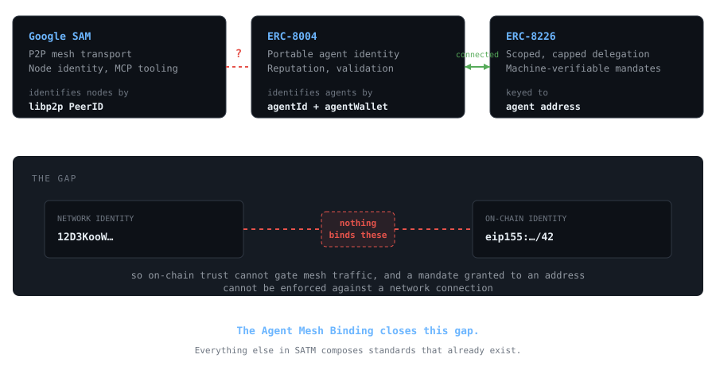
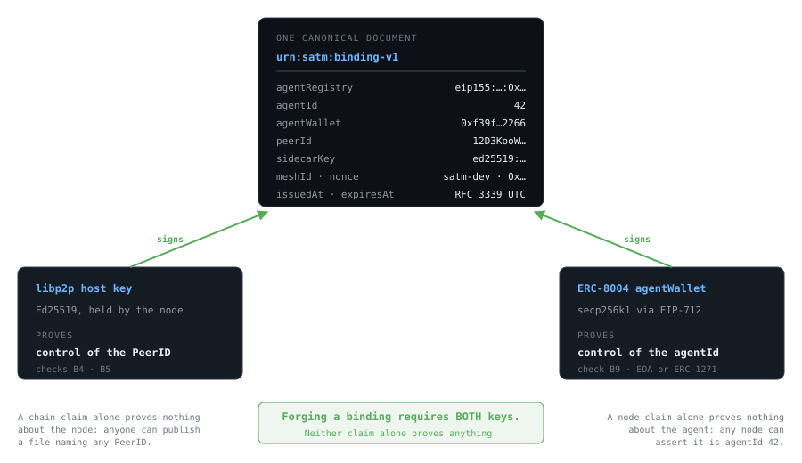
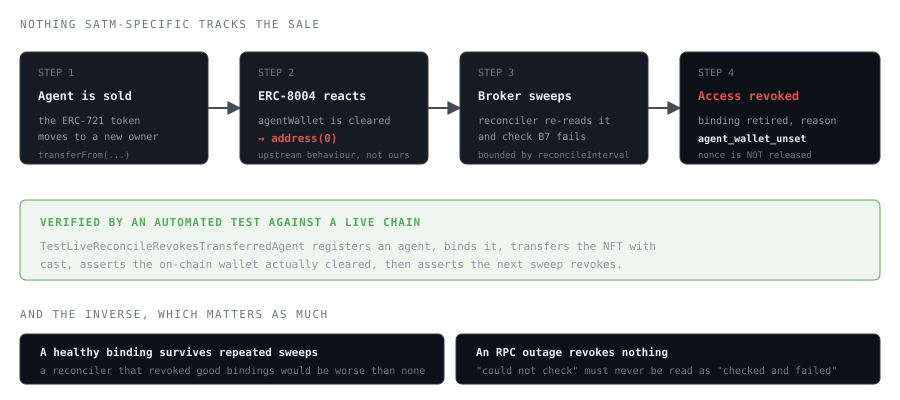

Research prototype · Apache-2.0
Agents can talk. They still can’t trust each other.
AI agents already call each other’s tools. What they cannot do is answer who owns this agent, what authority does it hold, what has it actually done, and what proof exists — without a pre-existing relationship.
The Sovereign Agent Trust Mesh is a prototype that answers those questions by joining three things that do not currently connect.
The problem
Three standards, one gap
Each of these solves a real piece of the problem. None of them solves it alone, and — crucially — no two of them are joined at the point that matters.
| Layer | Technology | What it gives us | What it lacks |
|---|---|---|---|
| Transport | Google SAM | Zero-config P2P mesh, cryptographic node identity, MCP as the agent API | No global reputation, no verifiable mandates |
| Identity & trust | ERC-8004 | Portable agent identity, reputation, independent validation | No transport |
| Authority | ERC-8226 | Machine-verifiable, scoped, capped, time-bounded delegation | Neither identity nor transport |

The contribution
One document, signed twice
The Agent Mesh Binding is a single canonical document signed by two
different keys: the node’s libp2p host key, proving it controls the PeerID, and the
agent’s ERC-8004 agentWallet via EIP-712, proving it controls the
on-chain identity.
Neither claim is worth anything alone. A chain-side claim proves nothing about the node —
anyone can publish a registration file naming any PeerID. A node-side claim proves nothing
about the agent — any node can assert it is agentId 42.
Forging a binding requires both private keys.

The check that carries the most weight
B2a, the registry allow-list. An attacker can deploy their own
ERC-8004-shaped registry, mint themselves agentId 42 with a wallet they
control, publish a matching registration file, and sign both proofs correctly. That
submission is internally consistent — every other check passes. Only the
allow-list stops it, which is why the EIP-712 domain is derived from our
allow-list and never from the submitted document.
The property that makes it useful
Selling an agent revokes its access
ERC-8004 clears agentWallet when the agent NFT is transferred. That single
upstream behaviour means a sold agent loses its mesh access and its ability to move assets
with no SATM-specific bookkeeping tracking the sale.
This is the capability the concept brief says nothing today delivers: on-chain state changes propagating into live network access control. It is demonstrated by an automated test against a live chain, not asserted.

Working style
Verified, not asserted
This project treats “the docs say so” as an unverified claim. Every assumption about upstream behaviour was tested against a real SAM mesh before the design leaned on it, and two of those tests changed the design rather than confirming it.
The load-bearing assumption held
SAM node attenuation really does evaluate the caller’s attested labels and deny at the transport handshake. Had this failed, the whole enforcement model would have needed reworking.
A specified path didn’t exist
The spec described labels being supplied by the broker at approval. That mechanism is not in SAM. Labels are declared by the node and attested by the admin. §6.1.3 was wrong and was corrected.
An optional feature became mandatory
SAM does not pass caller identity to a local MCP service. That makes the Call Attestation necessary rather than defence in depth — it is the only way an inbound sidecar learns who called.
Status
Where this actually stands
This is a research prototype, not a product. The admission path works end to end against real ERC-8004 bytecode and bindings are revocable. The trust, compliance and settlement planes are specified but not built.
| Phase | State | Evidence |
|---|---|---|
| 0 — Foundations | complete | 18/18 contract tests, live devnet deploy |
| 1 — De-risking spikes | complete | All five closed against a real SAM mesh |
| 2 — Identity plane & binding | 11 of 14 | Binding, attestation, revocation all working and tested |
| 3 — Trust plane | not started | Specified in §5.2 |
| 4 — Compliance plane | not started | ERC-8226 / RAMS, specified in §7.2 |
| 5 — Settlement & audit | not started | Specified in §7.3 |
| 6 — Demo & hardening | not started | 18 negative controls scripted |
Known gaps, stated plainly
Outbound authorization returns 501 pending the trust plane. Mesh revocation is
not yet propagated to the control plane, so a revoked peer keeps its Biscuit until expiry.
The default broker build assumes a single replica. Full list, with what each one needs, is
in BACKLOG.md.
Where to go next
How it works
The binding checks B1–B15, the attestation checks V1–V8, and why the ordering of each is load-bearing.
Evidence
What was measured against a real mesh, what changed as a result, and an honest separation of proven from specified.
Architecture
The six planes, the components, two-sided enforcement, and the threat model.